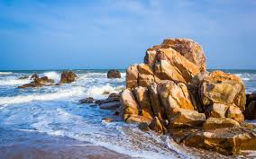
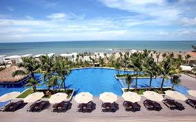

Là một trung tâm du lịch nổi tiếng vùng Nam Trung Bộ, cách trung tâm thành phố Phan Thiết (tỉnh Bình Thuận) 22km về hướng Đông Bắc, nơi đây là một dải bờ biển xanh hoang vu với các đồi cát đỏ trải dài như sa mạc và những làng chài xứ biển thuần chất Việt Nam.
Mũi Né còn hấp dẫn du khách bởi nhiều di tích lịch sử - văn hóa của một nền văn hóa đa dạng, đa dân tộc như Kinh, Chăm, Hoa, tiêu biểu có các tháp Chăm, tháp Nước, chùa Ông, chùa bà Thiên Hậu, Vạn Thủy Tú và nhiều di tích khác có giá trị về văn hóa, lịch sử, du lịch.
